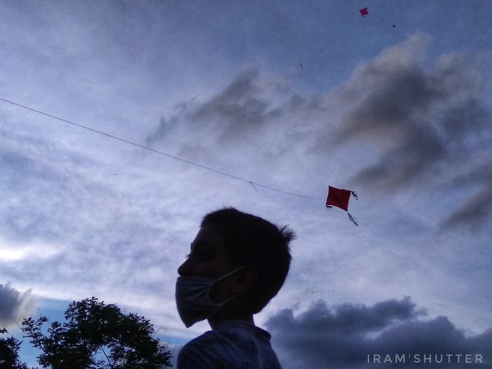
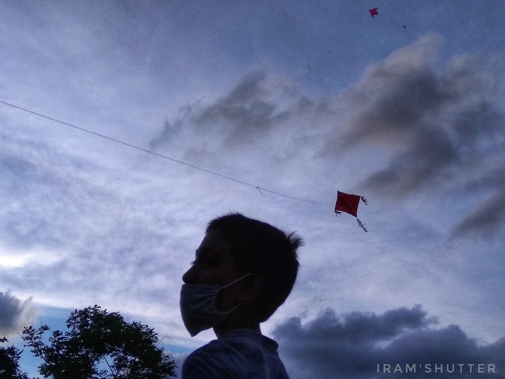

This is Mustafa here.This is my portfolio site. Here you can read my Bio.You will know about my working Skills career and all . By visiting this site, my Experiences will be guided through . There are many of my works that is included in the Portfolio part. You can see and download my all information in the official Resume.
Hire me or Contact me, check out my contacts and give me your message. Kuddos!
Biography
Myself Mustafa Iram Udoy.
I was born in Kishoreganj and but grew up in Dhaka,Cantonment.
I completed school and college from Safiuddin sarker academy.
My permanent address is Kazla, Kishoreganj. With my parents and sister, I am staying in Tongi now.
My sister is reading in class 12.
I am basically a huge music lover.
In other words, I am a musician too.
My hobbies are watching movies and playing guitar.As a engineer, my first priority is to help people in need. To upgrade
the society and to achieve the objectives of any company
with Honesty and Pride.
My moto in life is "I know that I know nothing".

 
